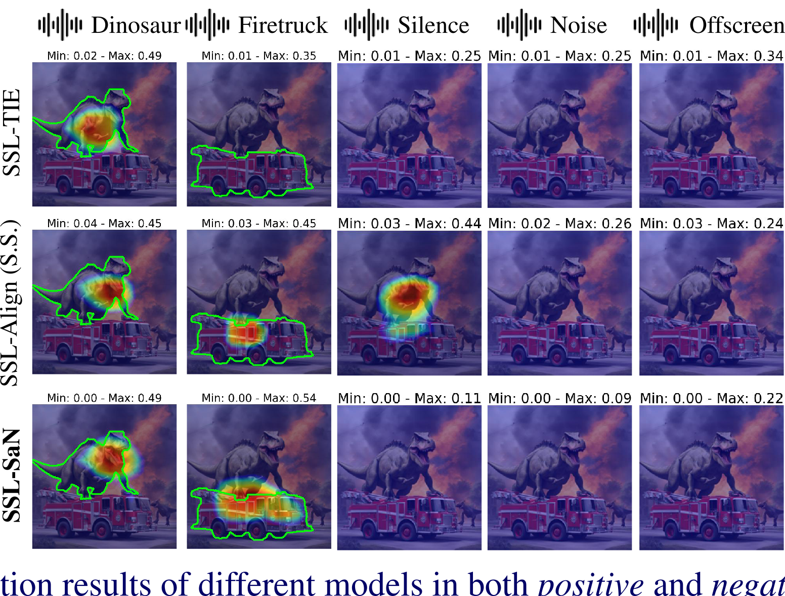
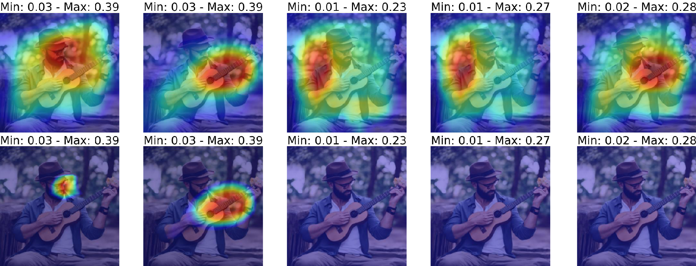

Hi, I'm
PhD candidate at UPF researching Audio-Visual Sound Source Localization. Bridging deep learning research and real-world ML engineering.
About Me
I'm Xavier, a PhD candidate at Universitat Pompeu Fabra (Barcelona), working on Audio-Visual Sound Source Localization within the IMVA group under Prof. Gloria Haro and co-advised by Prof. Magdalena Fuentes (NYU). My research asks: can models learn to localize sound in video — even when the audio is silence, noise, or from offscreen?
My path has been unconventional. I started with a BS in Theoretical Physics (UB), followed by two master's degrees — Intelligent Interactive Systems (UPF) and Astrophysics & Cosmology (UAB). Before the PhD, I spent 3+ years as a Data Scientist and AI Engineer in industry (DRIVING01, Schneider Electric), building NLP systems and predictive models. A visiting scholar stint at NYU MARL in 2024 deepened my research collaborations and led to an ICASSP 2025 publication.
I'm supported by an FPI doctoral fellowship from Spain's Ministry of Science and am part of the MuVAU research project. When not doing research, I teach Calculus II labs at UPF.
Research


Work
Self-supervised model for visual sound source localization robust to negative audio — silence, noise, and offscreen sounds. Introduces new metrics and extended evaluation benchmark IS3+.
Extended benchmark and new metrics for rigorous evaluation of visual sound source localization models. Tests models in scenarios with negative audio (silence, noise, offscreen).
Interactive analysis and online executable demo of the SLAVC self-supervised sound source localization method. Users can test the model on custom image-audio pairs.
Expertise
Background
Universitat Pompeu Fabra · Barcelona
Researching audio-visual sound source localization in the IMVA group. Advisors: Gloria Haro (UPF) and Magdalena Fuentes (NYU). FPI doctoral scholarship. Part of the MuVAU project (Spanish Ministry of Science).
NYU MARL · New York
Collaborated with Magdalena Fuentes on sound localization research. Culminated in ICASSP 2025 publication.
Schneider Electric · Barcelona
Led predictive modeling using Salesforce data to assess offer acceptance probabilities. Contributed to AI conversational agent development. Served as global AI consultant.
DRIVING01 · Barcelona
Built AI conversational agents for real estate and Liceu using NLP and neural networks. Later developed ML predictive models for Chupa Chups, COMSA Service, and real estate. Created Power BI dashboards.
Education
Universitat Pompeu Fabra · Barcelona
Jan–March 2022 · 2023 · 2024 · 2025 4 years
Teaching assistant for laboratory sessions and seminars. Topics: multivariable functions, domain and image, curves and surfaces, partial derivatives, tangent subspaces, Taylor approximation, multiple integration, and gradient descent optimization.
Get in Touch
Interested in collaboration, research, or just want to chat about audio-visual ML? Reach out.